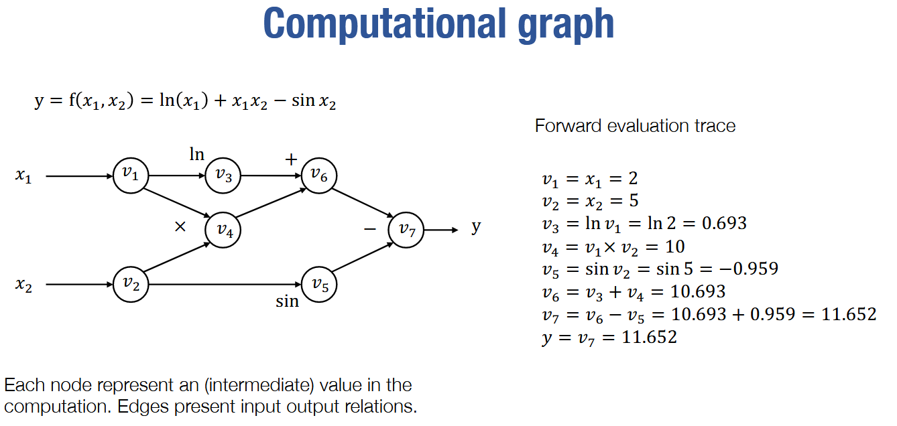
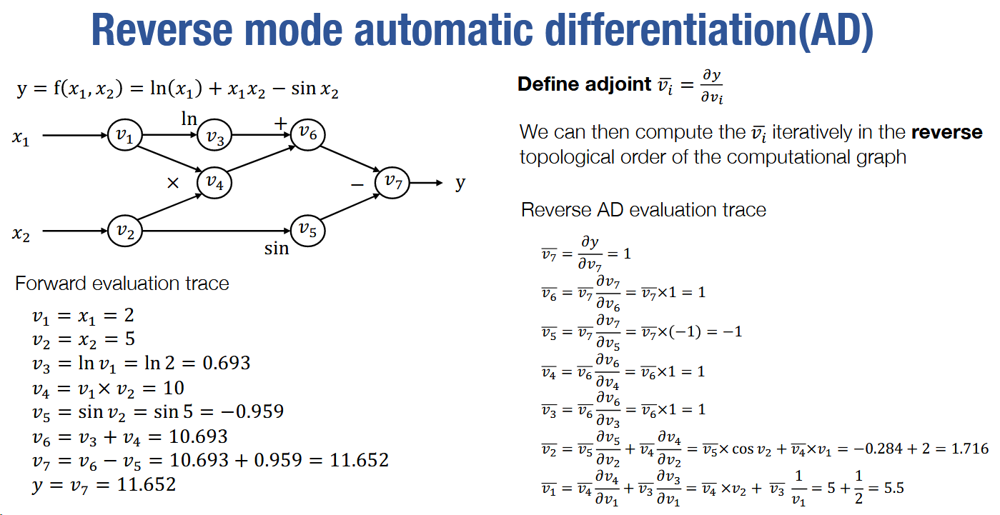
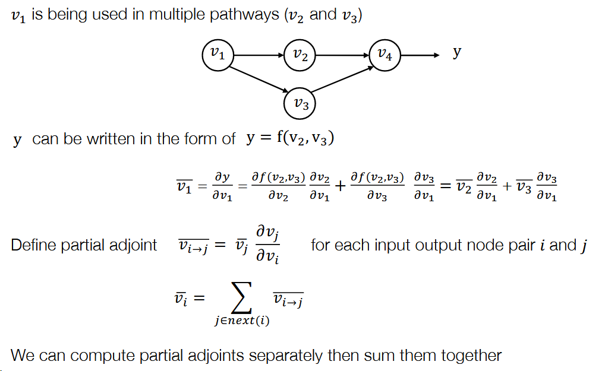
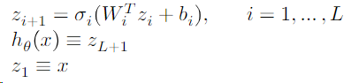
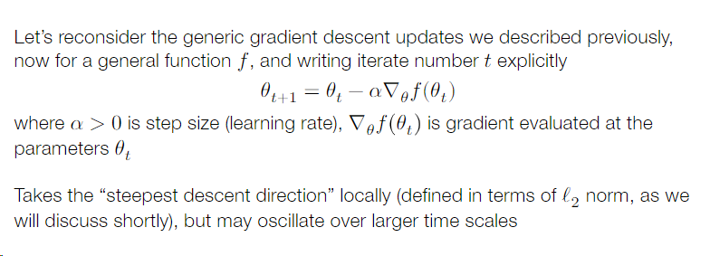
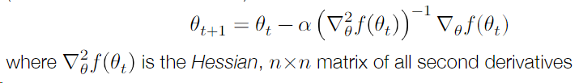
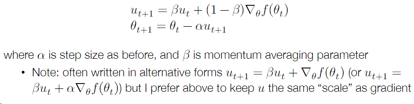
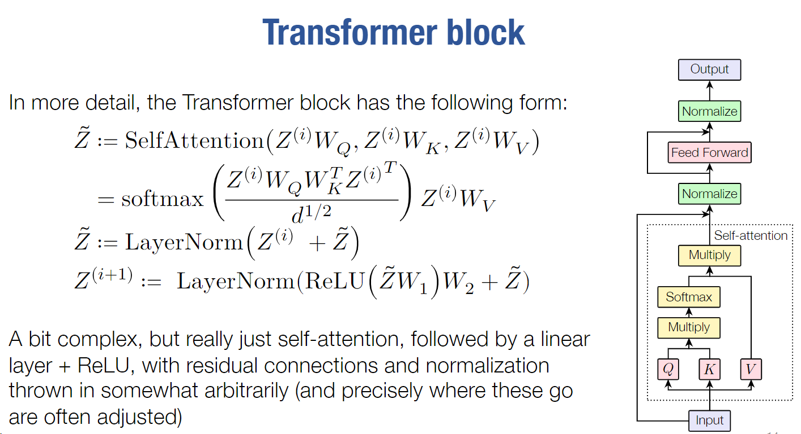

自动微分
- forward计算图

- backward计算图

- 同时需要考虑在不同道路中被使用的反向微分

- 反向自动微分代码
全连接
A 𝐿-layer, fully connected network, a.k.a. multi-layer perceptron (MLP), now with an explicit bias term, is defined by the iteration.

参数$\theta={W{1:L},b{1:L}}$，$\sigma{i}$一般是非线性的激活，一种常用的方法是$\sigma{L}(x)=x$
优化器
- 梯度下降法

学习率$\times$梯度
- Newton’s Method
根据Hessian（二维导数矩阵）

等价于使用二阶泰勒展开将函数近似为二次函数，然后求解最优解
- Momentum
一种考虑更多的中间结构-momentum update，考虑先前梯度移动的平均值

- “Unbiasing” momentum terms
- Nesterov Momentum
- Adam
Whether Adam is “good” optimizer is endlessly debated within deep learning, but it often seems to work quite well in practice (maybe?)
- Stochastic Gradient Descent
Initialization
初始化跟大模型推理貌似无关，就没深入学习了
Normalization
需要看视频才看得懂，晚点补
Regularization
需要看视频才看得懂，晚点补
Transformer
